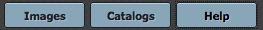

You can initiate the IRSA Viewer by loading the tool directly, or by clicking on a link that looks like this: . If the you have loaded the tool directly, the first time you see the IRSA Viewer, it does not have an image pre-loaded; if you have clicked the icon to launch it, the first time you see the IRSA Viewer, it already has an image loaded. Besides the online help (also available as a pdf), note that there are also IRSA Viewer Tool and Catalog Search Tool video tutorials, including quick start and longer AAS-demo style overviews, available at the IRSA YouTube channel. Also see the IRSA Viewer playlist (which collects all the IRSA Viewer tutorials together), as well as the playlist of tutorials relevant for more than one archive.
Contents:
+Terminology
+Visualization Overview -- overview of the tools
+User login
The words in blue rectangles under the toolbox are 'tabs.'

Regardless of what tool you use, your browser window is divided into
"panes", like "window panes." The contents of the panes depends on
what you are doing with the tool, but could include an image pane, a
catalog pane, and a plot pane. You can expand any of the window panes
by clicking on the expand icon:
When you add things to the image as seen in your browser, you are
adding 'layers' to your image. You can turn the various layers off and
on via the layers icon  in the image toolbox
-- the circled number tells you how many layers are displayed for the
image you have shown or selected.
in the image toolbox
-- the circled number tells you how many layers are displayed for the
image you have shown or selected.
See the Visualization section for more on visualization and the the Catalogs section for more on catalogs.